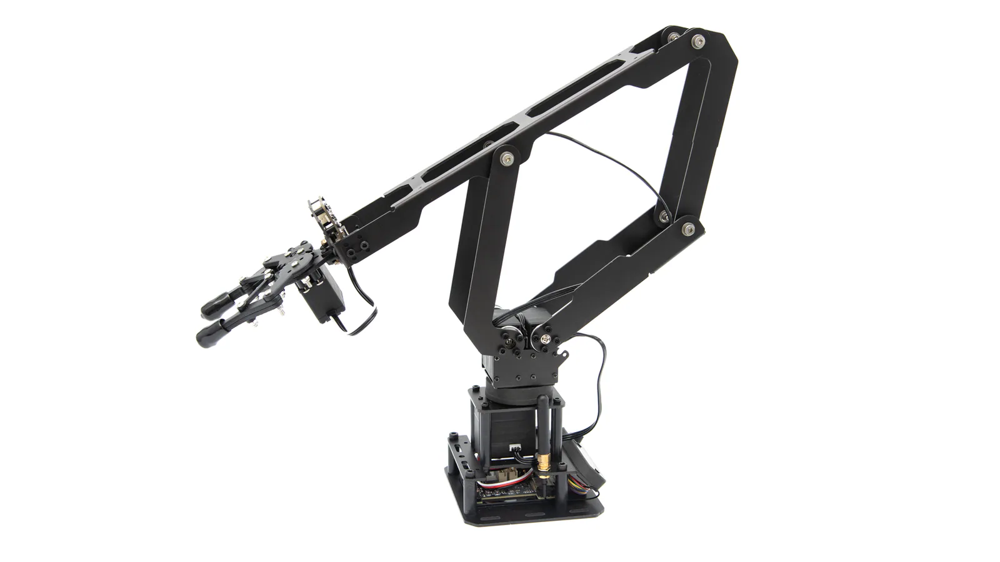
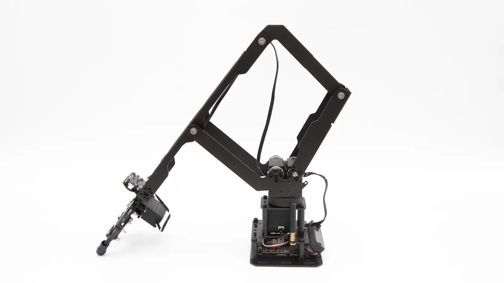
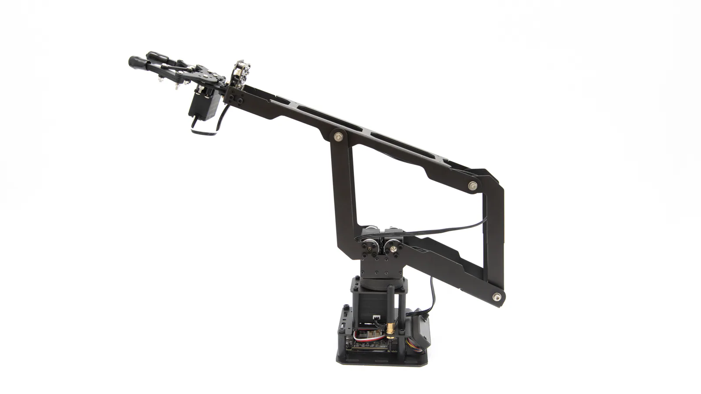
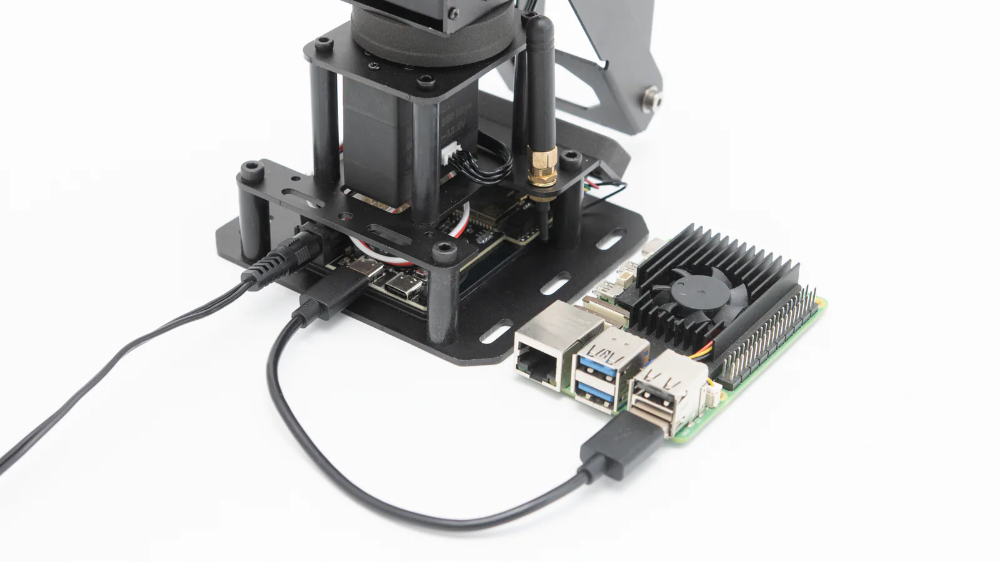
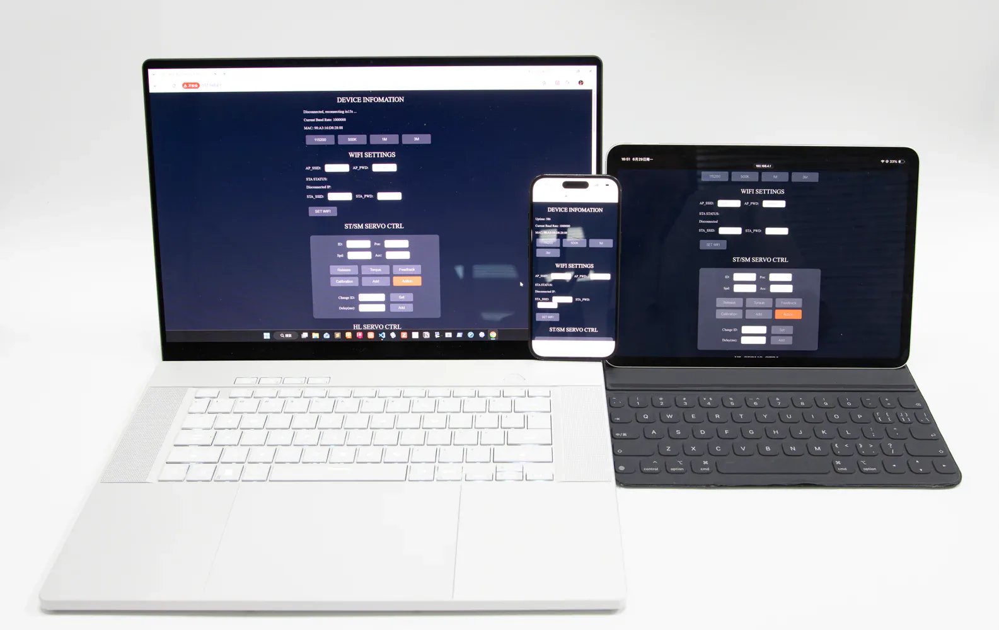
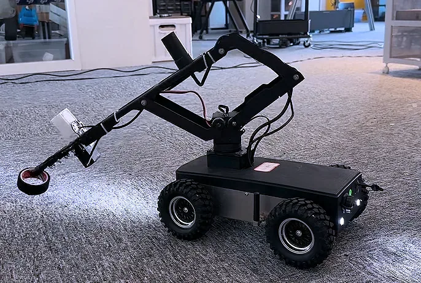
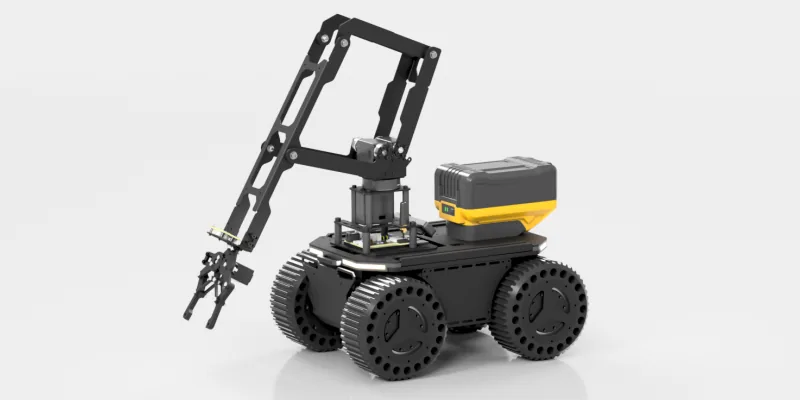

Carry useful payload in motion
Higher payload capacity leaves more operating margin for grasping, transfer, and end-of-arm tools.
More complete task capabilityMOBILE ROBOT ARM
LinkArm-LT
The parallel linkage gives the arm a more stable mechanical structure while reducing servo heat under load, making thermal protection less likely to interrupt a task. LinkArm-LT includes an ESP32-S3 sub-controller and a cross-platform Web App for straightforward mobile robot integration.

WHY PARALLEL
Compared with a conventional serial arm, LinkArm-LT focuses on four things that matter when the arm becomes part of a moving robot.
Higher payload capacity leaves more operating margin for grasping, transfer, and end-of-arm tools.
More complete task capabilityThe linkage provides firm mechanical support and reduces the effect of payload on arm posture.
More composed while the base movesLower thermal stress under load is useful for repeated motion and tasks that hold a pose.
Better suited to sustained operationReducing the chance of servo over-temperature protection helps prevent unexpected pauses during a task.
Higher system availability
STRUCTURE
LinkArm-LT takes a different mechanical approach from a typical serial arm. Its linkage and joint servos share the load, helping the arm stay stable while moving, starting, stopping, or holding position.

MECHANICAL DRAWING
A DXF drawing is available to support mechanical integration and further development.
SPECIFICATIONS
Key specifications for the complete arm and its built-in ESP32-S3 sub-controller.
| Mechanical | |
|---|---|
| Arm weight | 780 g (G-clamp not included) |
| Maximum payload | 1 kg |
| Maximum reach | 330 mm |
| Base rotation | 180° |
| Repeatability | ±8 mm (under the same payload) |
| Supported desktop thickness with G-clamp | 7–50 mm |
| Electrical | |
| Operating voltage | 9–12.6 V (supports direct power from a 3S lithium battery) |
| Peak current | 3 A |
| Communication interfaces | USB / UART / Wi-Fi |
| Power | 36 W |
| Main controller | ESP32-S3 |
| Control and features | |
| Communication protocol | JSON over USB / WebSocket / HTTP / UART / ESP-NOW |
| Built-in inverse kinematics | Supported |
| Built-in trajectory planning | Supported |
| Web App | Supported |
| Wireless modes | AP / STA / AP+STA @ 2.4 GHz |
| Construction and mounting | |
| Material | Aluminum alloy |
| Mounting patterns | 70 × 63.5 mm (4 × 4 mm-diameter holes) / 36 × 50 mm (4 × 3 mm-diameter holes) |
| Model | Robot_Driver_with_ESP32S3_lite_(A) |
|---|---|
| Controller module | ESP32-S3-WROOM-1 R8N8 |
| Onboard resources | Automatic flashing circuit, 5 V / 5 A DC-DC step-down regulator, and 3.3 V LDO |
| Host communication | USB CDC, GPIO UART, USB UART, and Wi-Fi (WebSocket / HTTP) |
| Bus servo / joint interfaces | RS485, single-wire TTL, and CAN bus |
| Additional wireless communication | ESP-NOW communication with other ESP32 devices |
| Data format | JSON* |
| USB CDC command rate | 80 commands/s |
| WebSocket command rate | 62–66 commands/s (recommended wireless method) |
| HTTP request rate | 40 commands/s (not recommended for high-rate control; occasional latency of approximately 0.3 s) |
| Power input | 6–20 V; the actual voltage depends on the rated voltage of the controlled bus servos or joints |
| Expansion header | ESP32S3-IO: 21, 9, 12, 11, 10, 2, 7, 6, 3V3, GND |
| Software support | Fully open source: onboard examples (C++), Web App (HTML / JavaScript / CSS), and host examples (Python) |
| Typical use | Maker projects, education, engineering evaluation, and personal projects |
* UART0 note: UART0 is configured as a serial pass-through for servo commands by default. A simple configuration change enables JSON command interaction instead.
BUILT-IN CONTROLLER
LinkArm-LT ships with an open-source control stack that includes the Web App, forward and inverse kinematics, and a JSON command interface. The built-in controller handles arm execution, leaving the host computer free to focus on navigation, perception, and task logic.


CROSS-PLATFORM WEB APP
The Web App runs directly on LinkArm-LT's ESP32-S3 controller. No dedicated app needs to be installed: power on the arm, connect to its Wi-Fi access point, and open the interface in a browser.
MOBILE BASE INTEGRATION
The parallel structure is designed around mobile robot requirements. End-of-arm interfaces can control DC devices and onboard RGB LEDs, while the included camera bracket provides a straightforward way to add a wrist-mounted camera.
A bus node at the end of the arm controls external devices through two adjustable-voltage DC switched outputs, two RGB LED channels, and an S.BUS input for remote-control applications.
An included camera bracket makes it possible to add an end-of-arm camera for first-person grasping and teleoperation.
A concise JSON command set and examples for multiple transports help developers integrate arm control without rebuilding the low-level motion stack.



CHOOSE YOUR VERSION
The main hardware distinction between LinkArm-LT and LinkArm-M is whether the ESP32-S3 sub-controller board is included.
| Comparison | LinkArm-LT | LinkArm-M |
|---|---|---|
| Arm structure | Parallel robot arm | Parallel robot arm |
| ESP32-S3 sub-controller | Included | Not included |
| Best suited to | Users who want a complete sub-controller solution and less low-level integration work. | Users who already have their own controller, drive system, or robot control architecture. |
| Choose it when | You want to bring the arm into a robot system more quickly. | You want to keep full control over the control hardware. |
No additional differences are claimed here beyond the confirmed controller-board configuration.
DECISION
Choose LT when you want a complete arm that can work on its own and move into full-system integration with less controller development.
TUTORIALS & DOCUMENTATION
Our tutorials and open-source examples take you from the first connection through browser control, command-based integration, and further development.
Power on the arm, connect to its Wi-Fi access point, open the Web App, and verify the first motion.
Learn the JSON command interface and USB CDC, WebSocket, and HTTP communication options.
Continue development with the onboard firmware, Web App source, and Python host examples.
Use the drawings, mounting information, and product documentation to integrate the arm with a mobile base.